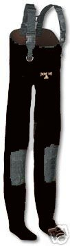
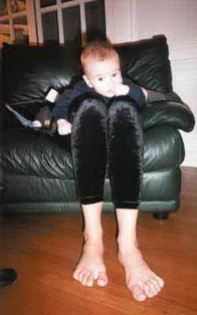

From the vantage point of my place of work, I was last week able to observe the nearly-exploded Hammersmith and City Line train and the railway track and street along which the suspected jihadist fled. Throughout the day my friends and I gazed towards the train, half expecting a combustion of some sorts, which thankfully never happened.
However, on the next day, something more out of the ordinary than an explosion occured. As we gazed through an telescope at the section of road that the terrorist allegedly ran down, which had by this time been cordoned off by police tape, we observed various police officers and sniffer dogs tracing slowly along the road looking for clues. All was humdrum. Then, suddenly, from the periphery of the scope, we caught a glimpse of the most extraodinary figure it has been my (mis)fortune to view, a sight which indelibly scorched itself onto my consciousness.
Looking (to borrow a phrase from my equally gobsmacked friend) like something a seventh grade Scientologist might have revealed to them on the day of their elevation, a seven or eight-foot tall homunculus in massively high waders or chaps (it was impossible to tell which), with seemingly triple-jointed legs, sauntered along the row of parked cars on the street, and from time to time fed one of his enormously elongated legs underneath the cars, perhaps in search of bombs or, on less auspicious days, lost footballs.
The figure was at least 70% leg, 25% torso, 5% head, with small tyrannosaurus rex arms which hung chillingly by the side of his chaps. After dangling a leg bonnetward like an apparatus for cleaning chimneys for a few minutes, he would then return to the centre of the road and stand in a contemplatative, contorted position, one leg wrapped around the other, like a figurine of a ballet-dancer inside a music box, seemingly musing on where next to feed his feet. It was apparent that other police officers and dogs seemed unable or unwilling to go anywhere near this figure of awe.
Who or what this phantasm was will perhaps never be truly understood, but as I rode the terror highway home that night, I felt safer knowing that our police would stop at nothing, including the boundaries of science and human nature itself, to prevent the onslaught of chaos in our midst. I have attempted to include an impression of the lower half of what we saw.

STOP PRESS: Since going to print, recent research has revealed images of trainee 'Waders' who are seemingly groomed from an early age into this particular career.

#27 July 2005
Comments...
they breed them in vats
Posted by: insider | 7:01pm 27 July 2005